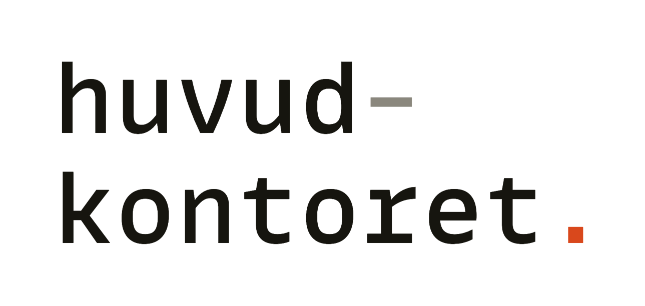

// 01 · ORDBILDEN
Gemener, monospace, ospärrad. Som ett domännamn, en
sökväg, ett system.
huvudkontoret, med punkt.


Ordbilden är satt i MonoLisa Medium och skrivs alltid huvudkontoret, med liten bokstav, även först i en mening. Punkten är adressens första tecken. Utan adress står den ensam i Signal, koncernens egen färg. Med adress hör den till adressen och tar dess färg, som i huvudkontoret.io i sidhuvudet. Aldrig versaler, aldrig spärrat, aldrig i ett annat typsnitt.
Utan punkt
I löpande text och listor, där namnet står
bland andra namn. Punkten hör till en adress, och
utan adress i sammanhanget står den i vägen.
hk-wordmark
Radbruten
huvud- / kontoret. med bindestrecket i Grafit.
Endast smala eller monumentala ytor, aldrig när
den enradiga får plats.
hk-wordmark-stack
Juridiskt namn
Huvudkontoret Norr AB används bara där den
juridiska personen menas: avtal och register.
Aldrig i löptext, gränssnitt eller
marknadsyta.

